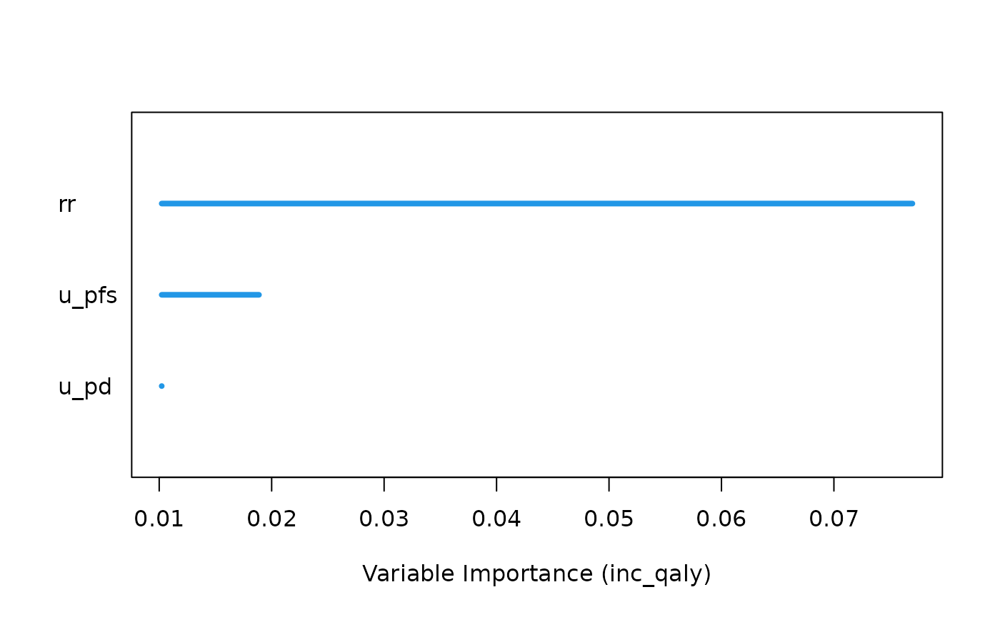
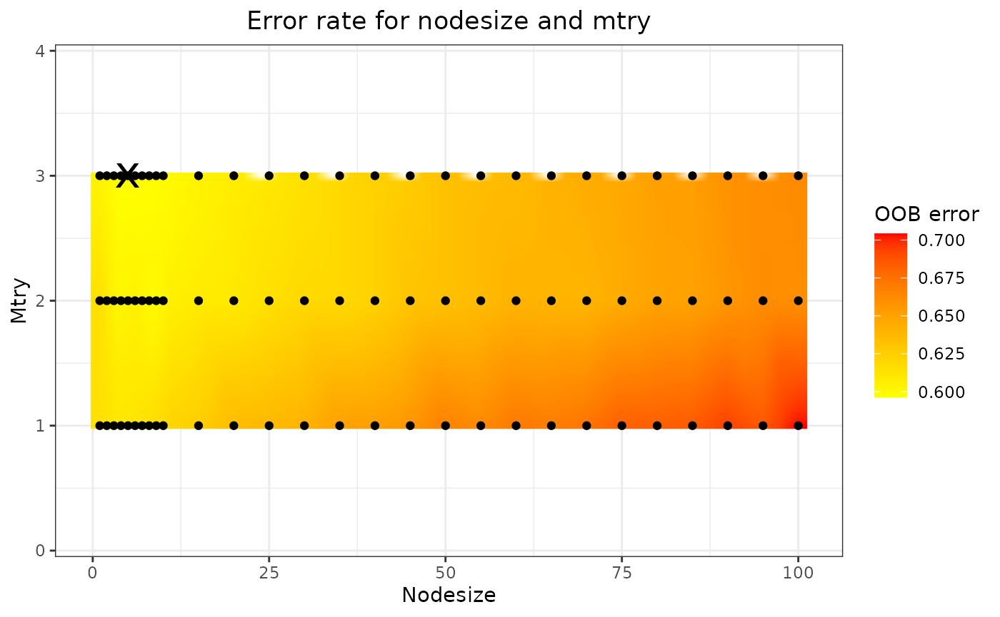
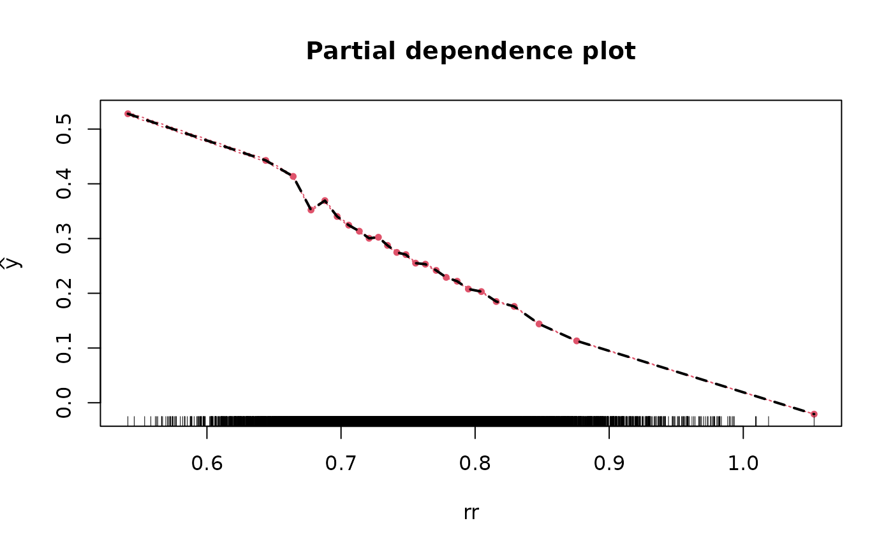
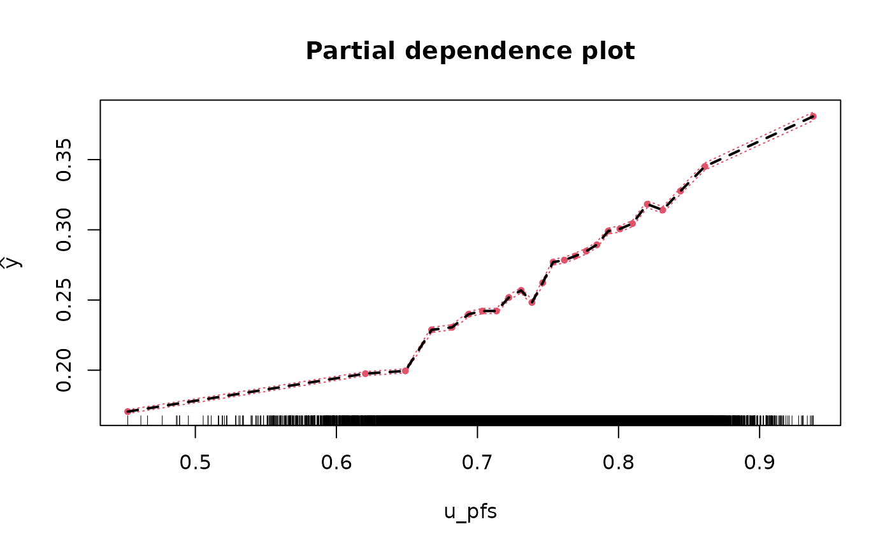
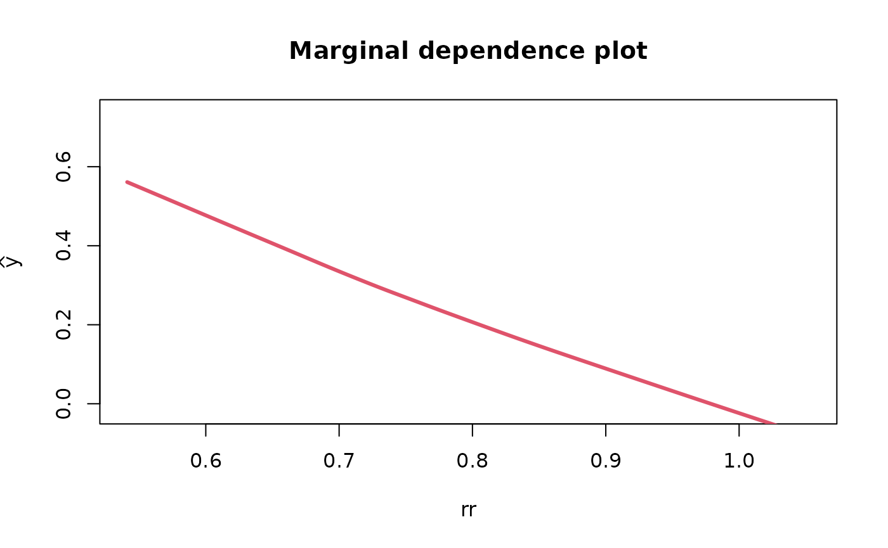
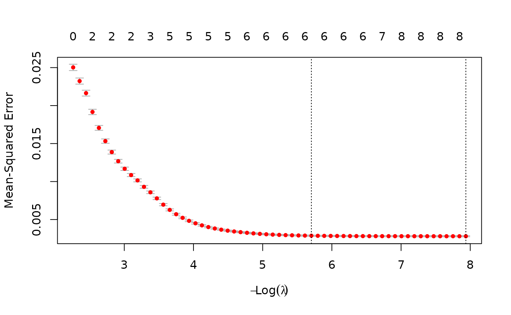
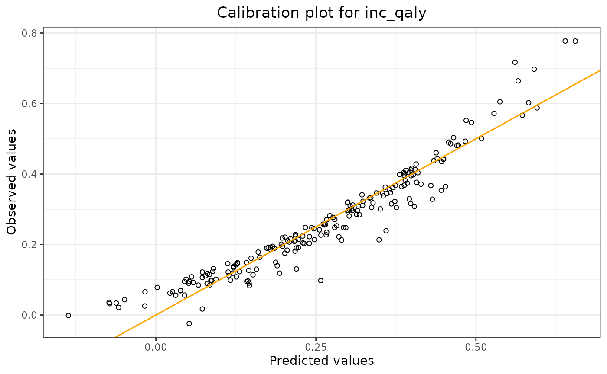

Introduction
This article describes an example workflow for fitting and validating
metamodels, and making predictions using these metamodels, using the
pacheck package. The types of metamodel which the package
supports are: linear model, random forest model, and lasso model. All
three metamodels are covered. Note: This vignette is
still in development.
We will use the example dataframe df_pa which is included
in the package.
*** Note: the functions for fitting the linear model and the random forest model both include a ‘validation’ argument. So it is also possible to validate the model using those functions. However, there is also a separate function for the validation process available. ***
Model Fitting & Parameter Information
Functions: fit_lm_metamodel,
fit_rf_metamodel, fit_lasso_metamodel.
For all three models (linear model, random forest model, and lasso
model), there is a separate function used to fit the model.
The random seed number chosen for these examples is 24.
Linear Model
Arguments: df, y_var, x_vars,
seed_num.
We fit the linear model, and obtain the coefficients.
lm_fit <- fit_lm_metamodel(df = df_pa,
x_vars = c("rr",
"u_pfs",
"u_pd",
"c_pfs",
"c_pd",
"c_thx",
"p_pfspd",
"p_pfsd",
"p_pdd"),
y_var = "inc_qaly",
seed_num = 24,
show_intercept = TRUE)
lm_fit$fit##
## Call:
## lm(formula = form, data = df)
##
## Coefficients:
## (Intercept) rr u_pfs u_pd c_pfs c_pd
## 1.212e+00 -1.278e+00 6.065e-01 -3.218e-01 -6.955e-06 -2.614e-06
## c_thx p_pfspd p_pfsd p_pdd
## -1.564e-06 -2.923e-01 -3.558e+00 8.355e-01Variable Transformation
Arguments: standardise, x_poly_2,
x_poly_3, x_exp, x_log,
x_inter.
The function also allows for the transformation of input
variables.
In the following model we standardise the regression parameters by
setting the standardise argument to TRUE. Standardisation
is performed as follows:
where
is the value of parameter
,
the mean value of parameter
,
and
its standard deviation.
lm_fit <- fit_lm_metamodel(df = df_pa,
x_vars = c("rr",
"u_pfs",
"u_pd",
"c_pfs",
"c_pd",
"c_thx",
"p_pfspd",
"p_pfsd",
"p_pdd"),
y_var = "inc_qaly",
seed_num = 24,
standardise = TRUE
)
lm_fit$fit##
## Call:
## lm(formula = form, data = df)
##
## Coefficients:
## (Intercept) rr u_pfs u_pd c_pfs c_pd
## 0.2687693 -0.0857699 0.0426221 -0.0325251 -0.0013803 -0.0010496
## c_thx p_pfspd p_pfsd p_pdd
## -0.0001541 -0.0103581 -0.1054658 0.0332658Here we transform several variables: rr will be
exponentiated by factor 2, c_pfs & c_pd by
factor 3, we take the exponential of u_pfs &
u_pd, and the logarithm of p_pfsd.
lm_fit <- fit_lm_metamodel(df = df_pa,
x_vars = c("p_pfspd",
"p_pdd"),
x_poly_2 = "rr",
x_poly_3 = c("c_pfs","c_pd"),
x_exp = c("u_pfs","u_pd"),
x_log = "p_pfsd",
y_var = "inc_qaly",
seed_num = 24
)
lm_fit$fit##
## Call:
## lm(formula = form, data = df)
##
## Coefficients:
## (Intercept) p_pfspd p_pdd poly(rr, 2)1
## -0.978025 -0.296234 0.835575 -8.556376
## poly(rr, 2)2 poly(c_pfs, 3)1 poly(c_pfs, 3)2 poly(c_pfs, 3)3
## 0.668141 -0.144615 0.049536 -0.018089
## poly(c_pd, 3)1 poly(c_pd, 3)2 poly(c_pd, 3)3 exp(u_pfs)
## -0.049560 -0.012581 0.003824 0.288374
## exp(u_pd) log(p_pfsd)
## -0.184217 -0.354622And lastly, we can also include an interaction term between
p_pfspd and p_pdd.
lm_fit <- fit_lm_metamodel(df = df_pa,
x_vars = c("p_pfspd",
"p_pdd"),
x_poly_2 = "rr",
x_poly_3 = c("c_pfs","c_pd"),
x_exp = c("u_pfs","u_pd"),
x_log = "p_pfsd",
x_inter = c("p_pfspd","p_pdd"),
y_var = "inc_qaly",
seed_num = 24
)
lm_fit$fit##
## Call:
## lm(formula = form, data = df)
##
## Coefficients:
## (Intercept) p_pfspd p_pdd poly(rr, 2)1
## -0.98776 -0.23112 0.88430 -8.55602
## poly(rr, 2)2 poly(c_pfs, 3)1 poly(c_pfs, 3)2 poly(c_pfs, 3)3
## 0.66839 -0.14476 0.05002 -0.01819
## poly(c_pd, 3)1 poly(c_pd, 3)2 poly(c_pd, 3)3 exp(u_pfs)
## -0.04949 -0.01199 0.00443 0.28843
## exp(u_pd) log(p_pfsd) p_pfspd:p_pdd
## -0.18427 -0.35460 -0.32533Random Forest Model
The random forest metamodel are fitted using the randomForestSRC
R package. Arguments: df, y_var,
x_vars, seed_num.
Note that for the RF model several variables are omitted to reduce computation time
rf_fit <- fit_rf_metamodel(df = df_pa,
x_vars = c("rr",
"u_pfs",
"u_pd"),
#"c_pfs",
#"c_pd",
#"c_thx",
#"p_pfspd",
#"p_pfsd",
#"p_pdd"),
y_var = "inc_qaly",
seed_num = 24)Variable importance
Setting the var_importance argument to TRUE returns a
plot which shows the importance of the included x-variables. The larger
the number is, the more important the variable is, meaning that it
greatly reduces the out-of-bag (OOB) error rate compared to the other
x-variables.
rf_fit <- fit_rf_metamodel(df = df_pa,
x_vars = c("rr",
"u_pfs",
"u_pd"),
#"c_pfs",
#"c_pd",
#"c_thx",
#"p_pfspd",
#"p_pfsd",
#"p_pdd"),
y_var = "inc_qaly",
var_importance = TRUE,
seed_num = 24)
Tuning nodesize and mtry
By using the tune argument , two parameters which can
have a significant impact on the model fit are nodesize
(the minimal size of the terminal node) and mtry (the
number of variables to possibly split at each node) are optimised to
improve model fit. The tuning process consists of a grid search. If
tune = FALSE, default values for nodesize and
mtry are used, which are 5 and (nr of x-variables)/3,
respectively.
rf_fit <- fit_rf_metamodel(df = df_pa,
x_vars = c("rr",
"u_pfs",
"u_pd"),
#"c_pfs",
#"c_pd",
#"c_thx",
#"p_pfspd",
#"p_pfsd",
#"p_pdd"),
y_var = "inc_qaly",
var_importance = FALSE,
tune = TRUE,
seed_num = 24)
rf_fit$tune_fit$optimal## nodesize mtry
## 5 3
rf_fit$tune_plot
The optimal nodesize and mtry can be found
in the rf_fit$tune_fit$optimal element of the list, and the
results are shown in the plot (in this case
rf_fit$tune_plot). On this plot, the black dots represent
the combinations of nodesize and mtry that
have been tried, the colour gradient is obtained through 2-dimensional
interpolation. The black cross marks the optimal combination, i.e., the
combination yielding the lowest OOB error.
Partial & marginal plots
We can obtain partial and marginal plots, by setting
pm_plot equal to ‘partial’, ‘marginal’, or ‘both’.
pm_vars specifies for which variables the plot must be
constructed.
rf_fit <- fit_rf_metamodel(df = df_pa,
x_vars = c("rr",
"u_pfs",
"u_pd"),
#"c_pfs",
#"c_pd",
#"c_thx",
#"p_pfspd",
#"p_pfsd",
#"p_pdd"),
y_var = "inc_qaly",
var_importance = FALSE,
tune = TRUE,
pm_plot = "both",
pm_vars = c("rr","u_pfs"),
seed_num = 24)


Lasso Model
We fit the lasso model and obtain the coefficients using all parameter values from all iterations.
lasso_fit <- fit_lasso_metamodel(df = df_pa,
x_vars = c("rr",
"u_pfs",
"u_pd",
"c_pfs",
"c_pd",
"c_thx",
"p_pfspd",
"p_pfsd",
"p_pdd"),
y_var = "inc_qaly",
tune_plot = TRUE,
seed_num = 24)
lm_fit$fit##
## Call:
## lm(formula = form, data = df)
##
## Coefficients:
## (Intercept) p_pfspd p_pdd poly(rr, 2)1
## -0.98776 -0.23112 0.88430 -8.55602
## poly(rr, 2)2 poly(c_pfs, 3)1 poly(c_pfs, 3)2 poly(c_pfs, 3)3
## 0.66839 -0.14476 0.05002 -0.01819
## poly(c_pd, 3)1 poly(c_pd, 3)2 poly(c_pd, 3)3 exp(u_pfs)
## -0.04949 -0.01199 0.00443 0.28843
## exp(u_pd) log(p_pfsd) p_pfspd:p_pdd
## -0.18427 -0.35460 -0.32533The plot shows the tuning results: the error rate for each lambda. The smallest lambda is chosen for the full model.
Generally, the lasso procedure yields sparse models, i.e., models that involve only a subset of the set of input variables. In this case however, no coefficients are set to 0, and we have the same results as we obtained from the linear model.
Model Validation
Validating the metamodels can be performed using the
validation arguments of the metamodel functions, or by
using the validate_metamodel function.
Through the validate_metamodel function, three types of
validation methods can be used: the train/test split, (K-fold)
cross-validation, and using a new dataset. We will discuss each
validation method.
Train/test split and Linear Model
Arguments: method, partition.
First we use the train/test split. For this we need to specify
partition, which sets the proportion of the data that will
be used for the training data. We also set show_intercept
to TRUE for the calibration plot.
lm_validation = validate_metamodel(lm_fit,
method = "train_test_split",
partition = 0.8,
show_intercept = TRUE,
seed_num = 24)
lm_validation$stats_validation## Statistics Value (method: train/test split)
## 1 R-squared 0.920
## 2 Mean absolute error 0.030
## 3 Mean relative error 0.552
## 4 Mean squared error 0.002
lm_validation$calibration_plot
The output shows the validation results: R-squared, mean absolute
error, mean relative error, and the mean squared error of the model
applied to the test data. By using
lm_validation$calibration_plot, we can display the
calibration plot.
K-fold Cross-Validation and Random Forest Model
Arguments: method, folds.
To use k-fold cross-validation, one needs to specify
method = "cross_validation". In the example, two folds are
used by specifying fold = 2.
rf_validation = validate_metamodel(rf_fit,
method = "cross_validation",
folds = 2,
seed_num = 24)
rf_validation$stats_validation## Statistic Value (method: cross-validation)
## 1 R-squared 0.375
## 2 Mean absolute error 0.094
## 3 Mean relative error 1.090
## 4 Mean squared error 0.016New Dataset and Lasso Model
Arguments: method, df_validate.
It also might happen that a validation dataset is obtained once the model has already been fitted some time ago. The function enables us to use this dataset for the validation process.
Since we only have one dataset, we first construct two datasets, where one dataset is used to fit the model, and the other is used to validate the model. Note that doing it like this, it is very similar to the train/test split method.
indices = sample(8000)
df_original = df_pa[indices,]
df_new = df_pa[-indices,]
lasso_fit2 <- fit_lasso_metamodel(df = df_original,
x_vars = c("rr",
"u_pfs",
"u_pd",
"c_pfs",
"c_pd",
"c_thx",
"p_pfspd",
"p_pfsd",
"p_pdd"),
y_var = "inc_qaly",
tune_plot = FALSE,
seed_num = 24)
lasso_validation <- validate_metamodel(lasso_fit2,
method = "new_test_set",
df_validate = df_new,
seed_num = 24)
rf_validation$stats_validation## Statistic Value (method: cross-validation)
## 1 R-squared 0.375
## 2 Mean absolute error 0.094
## 3 Mean relative error 1.090
## 4 Mean squared error 0.016Making Predictions
Function: predict_metamodel. Arguments:
inputs, output_type
There is one function which can be used to make predictions using the
fitted metamodels: predict_metamodel.
As an example, we will fit a four-variable model for all three metamodel types and with the following inputs:
| p_pfspd | p_pfsd | p_pdd | rr |
|---|---|---|---|
| 0.1 | 0.08 | 0.06 | 0.10 |
| 0.2 | 0.15 | 0.25 | 0.23 |
Thus we will obtain two predictions.
There are two ways to enter the inputs for the metamodel: as a vector or as a dataframe. The same holds for the output of the function: a vector or a dataframe. We will cover all four scenarios.
First we fit the models and define the inputs. Note that we do not validate the model first (which is not according to best practices) and use all available data to fit the models.
#fit the models
lm_fit2 = fit_lm_metamodel(df = df_pa,
x_vars = c("p_pfspd",
"p_pfsd",
"p_pdd",
"rr"),
y_var = "inc_qaly",
seed_num = 24)
rf_fit2 = fit_rf_metamodel(df = df_pa,
x_vars = c("p_pfspd",
"p_pfsd",
"p_pdd",
"rr"),
y_var = "inc_qaly",
tune = TRUE,
seed_num = 24
)
lasso_fit3 <- fit_lasso_metamodel(df = df_pa,
x_vars = c("p_pfspd",
"p_pfsd",
"p_pdd",
"rr"),
y_var = "inc_qaly",
tune_plot = FALSE,
seed_num = 24)
#define the inputs
ins_vec = c(0.1,0.2,0.08,0.15,0.06,0.25,0.1,0.23) #vector
ins_df = newdata #dataframe (defined above)Note that the order of the input vector matters. If we have a
four-variable model, and we want to make two predictions, the first two
values are for the first variable, the next two values are for the
second variable, etc. ‘First’ and ‘second’ refer to the placement of the
variable in the model as defined in the R-code. So in our example, the
first and second variable is p_pfspd and
p_pfsd, respectively.
1. Input: vector (Linear Model)
predictions = predict_metamodel(lm_fit2,
inputs = ins_vec,
output_type = "vector")
print(predictions)## [1] 1.0703279 0.78602532. Input: dataframe (Lasso Model)
predictions = predict_metamodel(lasso_fit3,
inputs = ins_df,
output_type = "vector")
print(predictions)## [1] 1.0663160 0.78352253. Output: vector (Random Forest Model)
predictions = predict_metamodel(rf_fit2,
inputs = ins_vec,
output_type = "vector")
print(predictions)## [1] 0.6192895 0.26028584. Output: dataframe (Linear Model)
predictions = predict_metamodel(lm_fit2,
inputs = ins_vec,
output_type = "dataframe")
print(predictions)## p_pfspd p_pfsd p_pdd rr predictions
## 1 0.1 0.08 0.06 0.10 1.0703279
## 2 0.2 0.15 0.25 0.23 0.7860253